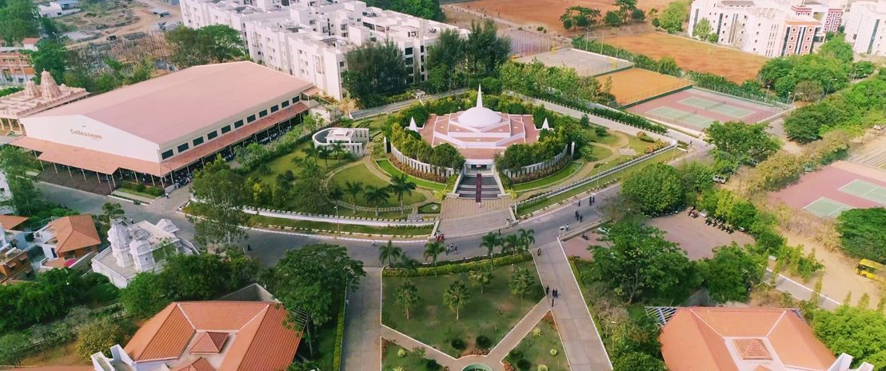
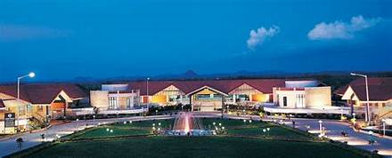

JAIN UNIVERSITY(DEEMED)
At a Glance
Jain (Deemed-to-be University) is more than a destination for higher learning; it is a community consisting of people from diverse backgrounds, cultures, and nationalities, all coming together in one place to offer you an enriching experience and a fulfilling educational journey.
Location of school

The university is located in Bangalore and is considered as one of the top colleges for higher studies in India. The university, located in the Silicon Valley of India, Bangalore is known to provide the students with an instrumental learning environment in terms of academic as well as extracurricular activities.
School Mascot
Jain (Deemed-to-be University) is more than a destination for higher learning; it is a community consisting of people from diverse backgrounds, cultures, and nationalities, all coming together in one place to offer you an enriching experience and a fulfilling educational journey. With over six campuses, there is always something new to discover with numerous vibrant fests, societies, seminars, and a fully integrated student community. Explore several industry-driven and career-focused regular as well as distance learning programs to satiate your quest for knowledge in the corridors of a reputed institute that stands as a testimony of an illustrious past and progressive future. Students can take their pick from several fests like the CMS Festival , Cranium , Infinity , Samanvaya, Taru Samkruti, Corporate Expo, and Science Model Expo to showcase their talents; if they feel like making a statement through a marathon, there is the My Country Run; and for those who want to make an impact through social causes, they can try NCC, NSS, Radio Active –CR 90.4 MHz , Sampradaana, Anna Seva, and SEED. Besides these, there are conferences, panel discussions, seminars, and workshops held on national and international levels for the students and faculty to learn and contribute to issues that matter such as science, IT, economy, and health. Jain encourages the entrepreneurial spirit through centers – CRCE and JUiNCUBATOR by conducting competitions and inviting experts to offer insights. Stimulate your intellect and discover amazing possibilities because there is something for everyone at Jain (Deemed-to-be University).